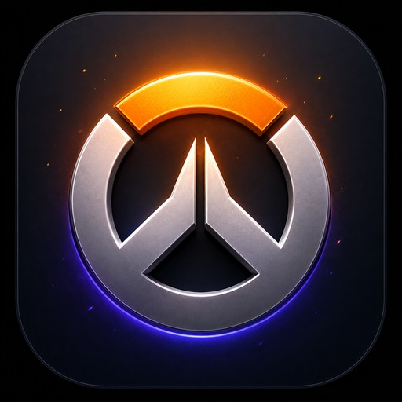

Rocket League + Counter-Strike 2 + Overwatch 2
The ultimate Rocket League, CS2 & Overwatch 2 companion.
NexPlay is a lightweight Windows app that tracks your progress in Rocket League, CS2 and Overwatch 2 — MMR and rank, sessions, a live overlay, crosshairs and training — all in one dark, consistent place.

What it is
Switch games with one click — the whole interface, stats and tools adapt to the title you pick.

MMR and charts, W/L sessions, a live overlay, playlist detection, and the road to SSL.

Match stats, a crosshair library, per-map stats, training commands and AI Insights.

Rank per role and career stats from your public profile, a manual session tracker with a trend chart, and a win/loss overlay.
Features
Built on one rule: it only shows data that can be obtained honestly — nothing made up.
A candlestick MMR chart on a fixed 0–2000 scale, separately for 1v1, 2v2 and 3v3.
Reads the exact MMR the game now shows on screen — all playlists from the Play menu, or automatically after a ranked match.
A floating W/L, streak and MMR panel that follows the playlist you're on and counts forfeit losses.
Recognises 1v1/2v2/3v3 plus Hoops, Dropshot and Snow Day from the match arena.
Ready-made pro presets plus your own — copy them as one console line or export to a .cfg.
Win rate and scores broken down by map, so you know where you actually play well.
Organised sv_cheats commands for practice — each one copied on its own.
Summaries and tips drawn from your own CS2 matches.
Rank per role, win rate, KDA, time played and your most-played hero — read from your public career profile.
A manual W/L/D tracker with record, win rate, streak and a net-result trend chart for the sitting.
A floating panel with Win/Draw/Loss buttons — log a result in one click while you play, no live feed needed.
Reads your rank and end-of-match stats from a screenshot — entirely in memory, no files saved — and you confirm before it's stored.
The app checks for new releases and installs them without hunting for files.
Everything stays on your PC. Nothing is sent to any server.
Screenshots
Real screens from the app — a dark, consistent interface for both games.


Getting started
The app runs the moment you install it — these steps switch on the live and history features.
Download the installer and run it. No account, no .NET — it's self-contained. Then add your in-game name as a profile in Settings → Add profile.
Turns on the session tracker, the overlay and the ±9 MMR chart. Rocket League has a built-in stats exporter you switch on with one small config file — no mod, nothing injected.
Close Rocket League, then create or edit this file:
Documents\My Games\Rocket League\TAGame\Config\TAStatsAPI.ini
Put exactly this inside, save it, and start the game:
[TAGame.MatchStatsExporter_TA] Port=49123 PacketSendRate=10
Pulls your recent matches from your uploaded replays. Open ballchasing.com/upload → Settings, copy your free API key, then paste it in NexPlay under Settings → Ballchasing and click Test.
Nothing to set up. NexPlay writes the Game State Integration config for you the first time it detects CS2 — just launch NexPlay, start the game and play.
The session tracker and the win/loss overlay work right away — just start logging results. For career stats and rank, set your profile to public in Overwatch 2 (Options → Social → Career Profile Visibility → Everyone), then enter your BattleTag on the Overwatch dashboard. Blizzard hides private profiles entirely, so this is required for any stats.
Changelog
The full history lives in the GitHub releases.
Roadmap
Ideas being worked on — no hard dates, and the list shifts with feedback.
The same in-game HUD Rocket League already has, brought to Counter-Strike 2.
Snapshots at the end of each season, so you can look back on where you peaked.
Each CS2 map's stats page dressed with its own artwork.
More from your own matches — trends, habits and things to work on.
FAQ
Yes, completely. No account and no payment required.
NexPlay only reads data — it doesn't modify either game or inject any code. CS2 uses Valve's official Game State Integration. Rocket League uses the game's own built-in match stats exporter, switched on with a config file — no third-party mod. Even so, no external tool can promise anything with total certainty, so use it at your own discretion.
Rocket League doesn't publish MMR through any official API. So NexPlay derives it from match results (±9 per win/loss) and lets you enter a starting value by hand — rather than showing made-up numbers.
Overwatch 2 profiles are private by default, and Blizzard hides private profiles completely. Set yours to public (Options → Social → Career Profile Visibility → Everyone) and enter your BattleTag; after a few minutes it becomes readable. Blizzard also publishes no match history or per-map data for OW2, so NexPlay doesn't show those — the session tracker and overlay cover per-match results instead, and they work with no setup at all.
Your stats stay on your PC (in the app's folder under %LocalAppData%). NexPlay reaches the internet to check GitHub for updates, to fetch your own match history from Ballchasing if you add a key, and — only if you opt in — to send anonymous usage stats (which tabs you open, error types, app version) with no nick, no IP and no personal data. You choose on first launch and can flip it any time in Settings.
No. Windows SmartScreen shows that for any app that isn't code-signed and that it hasn't seen many times yet — NexPlay is new and unsigned, like a lot of small free tools. To run it, click More info → Run anyway. A code-signing certificate (which removes the warning) costs money that a free project doesn't have; the warning also fades on its own as more people install it.
No. The installer is self-contained — it includes everything it needs.
For live data (overlay, match result) yes. Previously collected stats and the tools (crosshairs, commands) work any time.
The app checks GitHub for the latest release and can download and install it — you don't have to find files by hand.
The best place for reports, suggestions and questions is the Issues tab on GitHub — everything in one place and visible to others.
Report on GitHub →